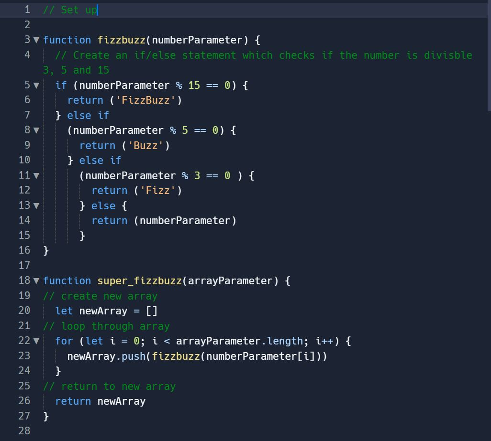

Problem-Solving Techniques
- Posted 13 July 2022, Brayden Drummond

What was the problem I was stuck on?
I am going to tell you a story about a time where I was stuck on a simple problem, however I used the principles of problem-solving to help me through the solution. In short, the problem was that I was unable to have the FizzBuzz game work correctly in my coding in JavaScript. For those who do not know what the FizzBuzzgame is, it is a game where the console should log Fizz for all numbers that are multiples of 3, Buzz for for all numbers that are multiples of 5, and FizzBuzz for all numbers that are multiples of 3 and 5 (15).
After initially creating my code, I was unable to figure out where exactly my code was failing.
Here is a snapshot of the code I initially created, see if you can spot the mistake:
When I first selected 'run', the console threw an error code at me ('ReferenceError: numberParameter is not defined). I was scratching my head for a trying to figure out why my code would not pass, as numberParameter was defined in the fizzbuzz function. After half an hour of sitting around reading through my code, I decided to move on to my task and return to this question later. Before taking my next break, I returned to the problem and left comments for myself, console logging at different stages of the codeand even googling see if I could figure out why I was getting an error message. And yes, everything was working well up until the point of the TypeError. I then decided to take a break.
How did I manage to solve this solution?
As above, I already employed the problem-solving techniques of reading error messages, googling, console.logging and pseudocode, however it was time to try another technique.
Upon returning to the problem, I then decided to talk out loud to myself through the problem and each stage of the code (employing the rubber duck method) to see if this would help me. Surprisingly, this helped, and I realised I was defining the wrong parameter in the second function. I should have been defining arrayParameter instead of numberParameter.
Here is the correct solution below:
What I learnt from this was that rather than sitting around scratching our head, it is a good idea to take a break and that talking through the problem out loud is always helpful.
Which problem-solving techniques do I feel confident with using?
I am really confident with using the following problem-solving technqiues:
- Pseudocode
- Trying something
- Rubber Ducky Method
- Reading error messages
- Console.logging
- Googling
On the other hand, I am aware however that I need to work on the follow problem-solving techniques:
- Asking my peers for help
- Ash my coaches for help
- Improving my process through self-reflections